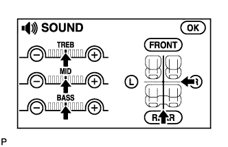

NAVIGATION SYSTEM > No Sound can be Heard from Speakers |
| 1.CHECK SOUND SETTING |
 |
Enter the sound adjustment screen by pressing the "SOUND" switch on the AUDIO display.
Set volume, fader, and balance to the initial values and check that the sound is normal.
|
| ||||
| OK | ||
| ||